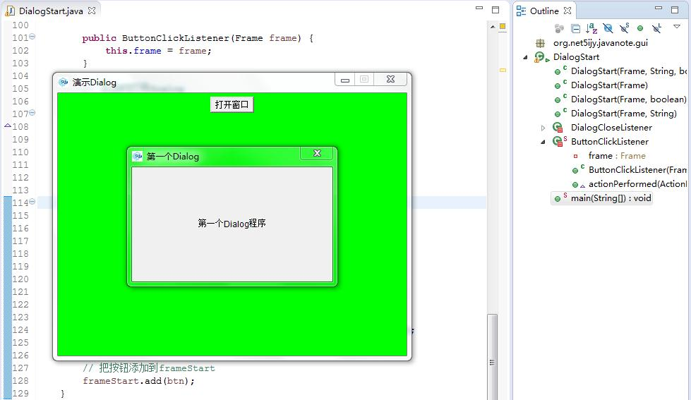
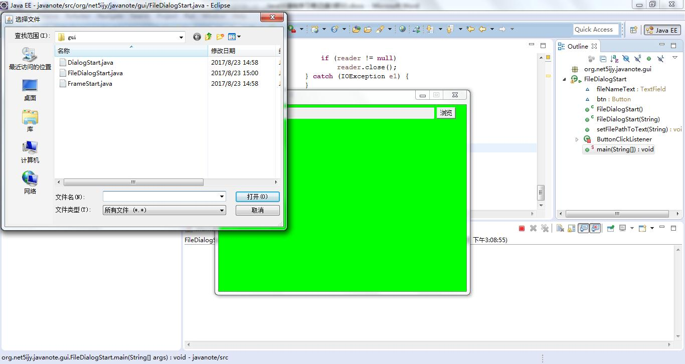
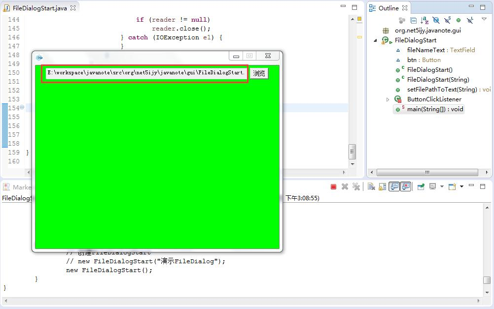

第四十八节 Dialog 和 FileDialog
一、Dialog 类
1、 核心 API
java.awt;
public class Dialog extends Window {}
带标题和边界的顶层窗口，边界一般用于从用户处获得某种形式的输入
默认布局为BorderLayout
构造方法
public Dialog(Dialog owner) 创建一个不可见的、无模式的Dialog，有指定所有者Dialog和一个空标题 public Dialog(Dialog owner, String title) 创建一个不可见的、无模式的Dialog，有指定的所有者Dialog和标题 public Dialog(Dialog owner, String title, boolean modal) 创建一个不可见的Dialog，有指定的所有者Dialog、标题和模式 public Dialog(Frame owner) 创建一个不可见的、无模式的Dialog，有指定所有者Frame和一个空标题 public Dialog(Frame owner, String title, boolean modal) 创建一个不可见的Dialog，有指定的所有者Frame、标题和模式
主要方法
public void setModal(boolean modal) 指定此dialog是否应该是有模式的 public void setModalityType(Dialog.ModalityType type) 设置此dialog的模式类型
2、 演示
/** * 第一个Dialog演示程序 * * 创建一个FrameStart，在FrameStart上面添加按钮，按钮添加ButtonClickListener实现点击时打开DialogStart * * @author soft01 * */ public class DialogStart extends Dialog { public DialogStart(Frame owner, String title, boolean modal) { super(owner, title, modal); // 设置Dialog大小 // 第一个参数是宽 // 第二个参数是高 this.setSize(300, 200); // 设置Dialog位置居中 this.setLocation( (Toolkit.getDefaultToolkit().getScreenSize().width - 300) / 2, (Toolkit.getDefaultToolkit().getScreenSize().height - 200) / 2); // this.setLayout(new FlowLayout()); // 添加文字标签 Label lb = new Label("第一个Dialog程序"); // 文字标签居中对齐 lb.setAlignment(Label.CENTER); this.add(lb); // Dialog关闭按钮点击监听器 // 实现关闭按钮点击时关闭Dialog并释放屏幕资源 // 因为默认情况下关闭按钮点击时什么都不做 this.addWindowListener(new DialogCloseListener(this)); this.setVisible(true); } public DialogStart(Frame owner) { this(owner, null, false); } public DialogStart(Frame owner, boolean modal) { this(owner, null, modal); } public DialogStart(Frame owner, String title) { this(owner, title, false); } /** * 内部类继承WindowAdapter类，重写windowClosing方法实现Dialog关闭并释放屏幕资源 * * @author soft01 * */ private class DialogCloseListener extends WindowAdapter { private Dialog dialog; public DialogCloseListener(Dialog dialog) { this.dialog = dialog; } // 重写方法关闭Dialog @Override public void windowClosing(WindowEvent e) { dialog.dispose(); } } /** * 内部类实现ActionListener * * 创建对象时需要指定Frame作为打开Dialog的owner * * 重写actionPerformed方法 * * 点击时打开Dialog * * @author soft01 * */ private static class ButtonClickListener implements ActionListener { private Frame frame; public ButtonClickListener(Frame frame) { this.frame = frame; } // 点击时打开Dialog // 父窗口为frame @Override public void actionPerformed(ActionEvent e) { new DialogStart(frame, "第一个Dialog", true); // new DialogStart(frame, "第一个Dialog"); } } public static void main(String[] args) { // 创建frameStart FrameStart frameStart = new FrameStart("演示Dialog"); // 创建按钮 // 鼠标移入显示手形 // 添加监听器 // 点击时打开一个DialogStart Button btn = new Button("打开窗口"); btn.addActionListener(new ButtonClickListener(frameStart)); btn.setCursor(new Cursor(Cursor.HAND_CURSOR)); // 把按钮添加到frameStart frameStart.add(btn); } }
运行程序可以显示窗口

二、FileDialog 类
1、 核心 API
java.awt;
public class FileDialog extends Dialog {}
显示一个对话框窗口，用户可以从中选择文件
将阻塞其余应用程序，直到用户选择一个文件
构造方法
public FileDialog(Dialog parent, String title, int mode) 创建一个具有指定标题的文件对话框窗口，用于加载或保存文件 如果mode的值为LOAD，那么文件对话框将查找要读取的文件，所显示的文件是当前目录中的文件 如果mode的值为SAVE，则文件对话框将查找要写入文件的位置 public FileDialog(Frame parent, String title, int mode) 创建一个具有指定标题的文件对话框窗口，用于加载或保存文件
主要字段
public static final int LOAD 此常量指示文件对话框窗口的作用是查找要读取的文件 public static final int SAVE 此常量指示文件对话框窗口的作用是查找要写入的文件
主要方法
public String getDirectory() 获取此文件对话框的目录 public String getFile() 获取此文件对话框的选定文件。如果用户选择CANCEL，则返回文件为null public int getMode() 指示此文件对话框是用于文件加载还是内容保存 public void setMode(int mode) 设置文件对话框的模式。如果mode不是一个合法值，则抛出一个异常，并且不设置mode public void setDirectory(String dir) 设置文件对话框的目录 public void setFile(String file) 设置文件对话框窗口的选定文件。如果这样设置，那么在文件对话框窗口第一次显示之前，此文件就成为默认文件 public void setFilenameFilter(FilenameFilter filter) 设置文件对话框窗口的文件名过滤器。Microsoft Windows的文件名过滤器在Sun的参考实现中不起作用
2、 演示读取文件
/** * 演示FileDialog * * FileDialogStart类继承FrameStart * * 许多关于窗口大小、位置的代码就不用重复写了 * * @author soft01 * */ public class FileDialogStart extends FrameStart { TextField fileNameText = null; Button btn = null; public FileDialogStart() throws HeadlessException { this(null); } public FileDialogStart(String title) throws HeadlessException { super(title); // 添加一个文本域 // 创建时可以指定列数 // 用于显示选择的文件全路径 this.fileNameText = new TextField(55); // 设置只读 this.fileNameText.setEditable(false); this.add(this.fileNameText); // 创建按钮 // 鼠标移入显示手形 // 添加监听器 // 点击时打开一个FileDialog this.btn = new Button("浏览"); this.btn.addActionListener(new ButtonClickListener(this)); this.btn.setCursor(new Cursor(Cursor.HAND_CURSOR)); // 把按钮添加到frameStart this.add(this.btn); this.validate(); } /** * 为fileNameText设置指定的文字内容 * * @param filePath */ public void setFilePathToText(String filePath) { this.fileNameText.setText(filePath); } /** * 内部类实现ActionListener * * 创建对象时需要指定Frame作为打开FileDialog的owner * * 重写actionPerformed方法 * * 点击时打开FileDialog * * @author soft01 * */ private class ButtonClickListener implements ActionListener { private FileDialogStart frame; public ButtonClickListener(FileDialogStart frame) { this.frame = frame; } // 点击时打开FileDialog // 父窗口为frame @Override public void actionPerformed(ActionEvent e) { FileDialog chooser = new FileDialog(frame, "选择文件", FileDialog.LOAD); // 设置文件名过滤器 // 过滤.java文件 // Filename filters do not function in Sun's reference // implementation for Microsoft Windows chooser.setFilenameFilter(new FilenameFilter() { @Override public boolean accept(File dir, String name) { File f = new File(dir, name); // 如果是一个目录或文件名以.java结尾返回true return f.isDirectory() || name.endsWith(".java"); } }); // 显示文件选择对话框 chooser.setVisible(true); // 等待一会选择文件 // 此时程序会阻塞 String fileName = chooser.getFile(); String dir = chooser.getDirectory(); // 如果目录、文件名都不为null // 则打印一下文件的绝对路径 if (fileName != null && dir != null) { frame.setFilePathToText(dir + fileName); // 如果是.java文件 // 则读取文件内容输出到控制台 if (fileName.endsWith(".java")) { BufferedReader reader = null; try { reader = new BufferedReader(new InputStreamReader( new FileInputStream(dir + fileName), "GBK")); String line = reader.readLine(); while (line != null) { System.out.println(line); line = reader.readLine(); } } catch (UnsupportedEncodingException e1) { e1.printStackTrace(); } catch (FileNotFoundException e1) { e1.printStackTrace(); } catch (IOException e1) { e1.printStackTrace(); } finally { try { if (reader != null) reader.close(); } catch (IOException e1) { } } } } } } public static void main(String[] args) { // 创建FileDialogStart // new FileDialogStart("演示FileDialog"); new FileDialogStart(); } } * 这只是一个简单的例子，后面还会有读取文件到文本域，修改文件内容后另存的演示代码
运行程序可以显示窗口


第四十七节 GUI 概述、Frame入门
第四十九节 Panel （面板）
加入 QQ 群：5ijy网站开发交流
 ，获取更多源代码和开发环境配置信息。
，获取更多源代码和开发环境配置信息。